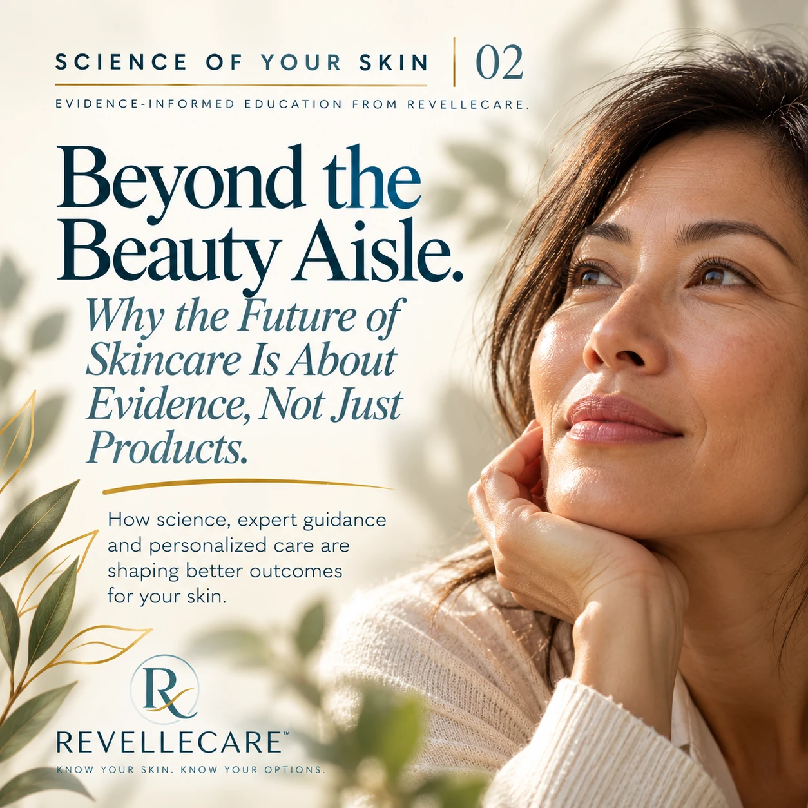

Science of Your Skin · Issue 02
Beyond the Beauty Aisle:
Why the Future of Skincare Is About Evidence, Not Just Products

For decades, skincare has largely been presented as a matter of choosing the right products. A cleanser for one concern. A serum for another. A moisturizer promising hydration, radiance or a more youthful appearance.
But what if the future of skincare is less about how many products we use and more about understanding which approaches are appropriate for our skin?
New consumer research suggests that this shift may already be underway.
From Products to Outcomes
In May 2026, Boston Consulting Group (BCG), in collaboration with WWD, published Beauty, Optimized, a report examining the changing relationship between beauty, wellness and health.
The research describes an emerging consumer segment called “Optimizers”: people who engage across traditional beauty, aesthetic procedures, and performance and longevity offerings.
Among the U.S. consumers surveyed in this segment, 75% reported choosing brands based on proven efficacy and scientific validation.
Medical professionals were also identified as their most trusted source of discovery. [1]
These findings suggest that for this particular group, skincare is increasingly about more than appearance. It is becoming part of a broader conversation about health, wellbeing and evidence-informed choices.
What Does Evidence-Based Skincare Actually Mean?
Not every skincare claim is supported by the same quality of evidence. A product may contain an ingredient that has been studied scientifically, but that does not automatically mean every formulation containing that ingredient will deliver identical results.
The concentration, formulation, method of application, frequency of use and individual patient's needs can all influence treatment outcomes. Consider tretinoin, a prescription retinoid that has been extensively studied in dermatology.
A 2022 systematic review of seven randomized controlled trials found that topical tretinoin improved several visible signs of photoaging, including wrinkles and uneven pigmentation. [2]
A subsequent systematic review published in 2024 reinforced tretinoin's established role in treating photoaged skin, while also highlighting an important consideration: irritation and tolerability can limit its use for some patients. [3]
These findings illustrate an important principle.
Evidence-based skincare isn't simply about choosing an ingredient with scientific research behind it. It's about understanding what that evidence demonstrates, who it applies to and whether a particular treatment is appropriate for the individual.
The goal should not be to use the most products. It should be to make informed decisions about which approaches are supported by evidence.
When Skincare Becomes Healthcare
Skin is the body's largest organ, and its condition is influenced by biological processes occurring throughout our lives. Hormones, genetics, environmental exposure and the natural aging process all influence how skin functions.
During perimenopause and menopause, hormonal changes can become particularly relevant.
A review published in the Journal of the American Academy of Dermatology examined the relationship between estrogen, menopause and skin health.
The researchers reported that declining estrogen levels are associated with changes including skin dryness, reduced dermal collagen, thinning and alterations in wound healing. [4]
Another scientific review, published in Dermato-Endocrinology, explored estrogen's influence on skin structure and function, including collagen synthesis, moisture retention and barrier function. [5]
Together, these findings help explain why some women notice changes in their skin's texture, hydration, firmness or sensitivity during the menopause transition.
However, these changes are not automatically medical problems, and aging itself is not a disease. Women deserve to understand why changes may occur and what options are available when those changes affect their comfort, wellbeing or quality of life.
Over-the-counter skincare can play an important role in maintaining skin health. For certain concerns, prescription treatments may also be appropriate following assessment by a qualified healthcare professional.
The distinction is not that one category is universally better than another. It is that different concerns call for different solutions.
What Outcomes Should Matter?
In clinical skincare, outcomes should be connected to the specific concern being treated.
Depending on the condition and intervention, researchers may evaluate changes in pigmentation, acne severity, skin hydration, texture, wrinkles or other measurable characteristics.
For example, a systematic review and meta-analysis of eight randomized controlled trials involving 1,361 participants found that topical tretinoin significantly improved fine and coarse facial wrinkles caused by photodamage compared with vehicle treatment. [6]
This is an example of how clinical evidence can help establish whether a particular treatment produces measurable improvements for a defined concern. But meaningful care involves more than a clinical measurement.
It also means understanding the patient's priorities, discussing realistic expectations, considering potential side effects and determining whether treatment is appropriate. There is an important distinction between evidence for an active ingredient and evidence for a particular compounded formulation.
Research supporting an ingredient does not automatically establish the safety or efficacy of every concentration, combination or formulation containing it. That is why transparent communication about evidence, potential benefits, limitations and uncertainty matters.
Where RevelleCare Fits
RevelleCare is being built around the belief that women deserve more than another product promising to transform their skin.
They deserve education, access to qualified healthcare professionals and the opportunity to explore prescription treatment when clinically appropriate.
Beginning with hormonal skin changes associated with perimenopause and menopause, RevelleCare aims to bring these elements together through a Canadian telemedicine care pathway.
The objective is not to replace everyday skincare or suggest that every skin concern requires medication. It is to make appropriate clinical care easier to understand and access.
For RevelleCare, the guiding principle is straightforward:
The right treatment begins with understanding the concern, evaluating the evidence and considering the individual.
The Future Is About Better Answers
The BCG and WWD research describes an industry moving beyond traditional product categories toward a broader ecosystem of beauty, wellness and healthcare. But for women navigating changes in their skin, the most meaningful shift may be much simpler.
From promises to evidence. From confusion to understanding. From endlessly searching for another product to knowing when professional guidance may help. We have spent decades teaching women how to shop for their skin.
Perhaps it is time we spent more time teaching them how to understand it.
Because sometimes skincare is beauty.
And sometimes skincare is healthcare.
References and Further Reading
- Boston Consulting Group & WWD. (2026). Beauty, Optimized. BCG × WWD Beauty Expansion Consumer Study, April 2026. See pages 20 and 25 of the report for consumer attitudes toward scientific validation, professional guidance and outcome-focused beauty.
- Sitohang, I. B. S., et al. (2022). Topical tretinoin for treating photoaging: A systematic review of randomized controlled trials. International Journal of Women's Dermatology, 8(1), e003. Read the cited research.
- Siddiqui, Z., et al. (2024). Comparing Tretinoin to Other Topical Therapies in the Treatment of Skin Photoaging: A Systematic Review. American Journal of Clinical Dermatology, 25, 873–890. Read the cited research.
- Hall, G., & Phillips, T. J. (2005). Estrogen and skin: The effects of estrogen, menopause, and hormone replacement therapy on the skin. Journal of the American Academy of Dermatology, 53(4), 555–568. Read the cited research.
- Thornton, M. J. (2013). Estrogens and aging skin. Dermato-Endocrinology, 5(2), 264– 270. Read the cited research.
- Tretinoin for Photodamaged Facial Skin: Systematic Review and Meta-Analysis of Randomized Controlled Trials. (2025). Read the cited research.
Editorial note: The BCG research examines consumer behaviour, while the dermatology studies examine specific biological mechanisms or treatments. Neither establishes clinical outcomes for RevelleCare's individual compounded formulations.
For educational purposes only. This article does not constitute medical advice or a recommendation for any particular prescription treatment. Individual needs and treatment suitability should be assessed by a qualified healthcare professional.
Explore RevelleCare Education